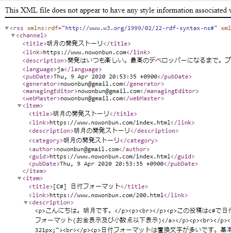
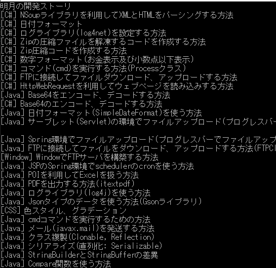
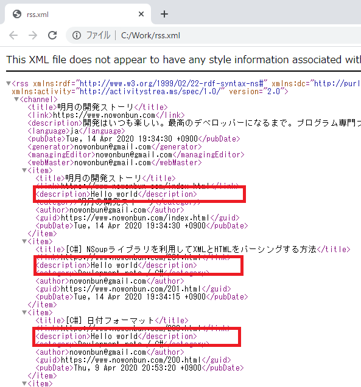
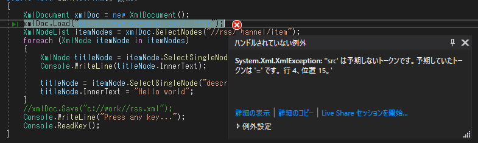

[C#] XMLをXPathを利用してデータを取得する方法
こんにちは。明月です。
この投稿はC#でXMLをXPathを利用してデータを取得する方法に関する説明です。
以前、XMLをCssSelectorエンジン(Sizzle)みたいに要素を検索してデータを取得する方法に関して説明したことがあります。
link - [C#] NSoupライブラリを利用してXMLとHTMLをパーシングする方法
最近はXPathを利用して検索することよりNSoupのライブラリを利用してデータを取得することが一般的なことになりました。でも、Sizzleエンジンの要素を検索する方法の以前はXPathで検索することが一般的だったんです。
でも、XPathの方法が悪いことではなく、Css Selectorで検索するキーが単純だし、理解しやすいのでよく使うことです。でも以前の方法がもっとよい時があります。
例えば、XMLから一つのデータとノードを検索することではNSoupのほうがいいです。でも、XMLの全体を構造化するしクラスを変換することではReaderを利用するかもっと明確なルールを決めて検索することならXPathがよいです。
Stringで正規表現でReplaceするか、ただ特定文字でReplaceするかの差と似てます。
実はXPathを使うためにはXPathを詳しく知らなければならないですが、いつかXPathは別途で説明します。
XPathを使うために以前で使った私のブログの検索エンジンに登録するようなRSSファイルを使いましょう。

link - https://www.nowonbun.com/rss
XPathを利用するクラスのNSoupみたいにオープンソースではなく、System.XMLの.Net Frameworkを使います。
using System;
// XmlDocumentを使うためのNamespace
using System.Xml;
namespace Example
{
class Program
{
// 実行関数
static void Main(string[] args)
{
// XmlDocumentを宣言
XmlDocument xmlDoc = new XmlDocument();
// rssを取得する。 urlアドレスならHttpの通信で取得する。ローカルディレクトならローカルで取得する。
xmlDoc.Load("https://www.nowonbun.com/rss");
// rssタグの下の channelタグの下の itemタグを選択
XmlNodeList itemNodes = xmlDoc.SelectNodes("//rss/channel/item");
// そのタグを複数なので繰り返しで探索する。
foreach (XmlNode itemNode in itemNodes)
{
// itemタグの下でtitleタグを選択
XmlNode titleNode = itemNode.SelectSingleNode("title");
// タグの値をコンソールに出力
Console.WriteLine(titleNode.InnerText);
// itemタグの下でdescriptionタグを選択
titleNode = itemNode.SelectSingleNode("description");
// Hello worldで書き直す。
titleNode.InnerText = "Hello world";
}
// ファイルで格納する。
xmlDoc.Save("c://work//rss.xml");
Console.WriteLine("Press any key...");
Console.ReadKey();
}
}
}

コンソールの結果をみればrssのtitleのタグの内容だけ出力したことを確認できます。
後、descriptionのタグのテキストデータを変更して、ファイルに格納しました。

結果を確認すればdescriptionタグの内容が変更されたことを確認できます。
NSoupとSystem.Xmlの差はNSoupの場合はHtmlまで検索ができます。でも、System.Xmlの場合はHtmlファイルが検索ができません。

Htmlを読み込めば許せないアトリビュートや開き閉めタグタイプではないこと(inputタグ)などでエラーが発生します。
個人的にはほぼNSoupを使いますが、逆に環境ファイルのXMLの場合は厳しい構造を要求するので逆にSystem.Xmlをよく使います。
ここまでC#でXMLをXPathを利用してデータを取得する方法に関する説明でした。
ご不明なところや間違いところがあればコメントしてください。
- [C#] 非同期ソケット通信(IOCP)-APMパターン2020/05/18 18:45:37
- [C#] 非同期ソケット通信(IOCP)-EAPパターン2020/05/15 19:31:02
- [C#] NPOIを利用してExcelを読み込んで出力する方法2020/05/08 10:43:52
- [C#] NPOIライブラリを利用してエクセルファイルを生成する方法2020/05/07 01:49:01
- [C#] Geckoライブラリを利用してウェブスクレイピングする方法2020/05/05 00:52:26
- [C#] PDFを作成する方法(iTextSharp)2020/05/03 10:22:40
- [C#] シリアライズ(Serialization)をする方法2020/04/30 19:32:04
- [C#] dynamicタイプの動的パラメータ-DynamicObject(WinFormでASP.MVCのViewBagオブジェクトを使用する方法)2020/04/29 22:41:32
- [C#] Stringの補間式(interpolation)2020/04/27 20:39:57
- [C#] Newtonsoft.JSONライブラリを利用してJsonデータ構造を扱う方法2020/04/23 20:19:53
- [C#] EMailを送信する方法(System.Net.Mail)2020/04/18 18:45:37
- [C#] ini環境ファイルを使う方法2020/04/22 00:09:39
- [C#] 環境設定ファイルを扱う方法(System.Configuration)2020/05/15 19:31:02
- [C#] Reflectionを利用してクラス複製する方法2020/04/17 00:34:33
- [C#] XMLをXPathを利用してデータを取得する方法2020/04/16 00:47:17
- [Bootstrap] HTMLデザインのフレームワークのBootstrap紹介2020/07/30 19:06:36
- [Python] メール(smtplib)を送信する方法2020/07/27 18:38:43
- [Python] HttpConnection(requestsモジュール)でウェブサーバーで接続する方法2020/07/20 14:41:51
- [Python] Excel(openpyxl)を扱う方法2020/07/16 16:40:31
- [Python] ファイル圧縮、解凍(zipfile)する方法2020/07/14 19:14:22
- [Python] Apache cgiでPythonを使う方法2020/07/09 19:58:19
- [Python] Web serverを起動する方法(http.server)2020/07/27 18:38:43
- [Python] WebSocketを使う方法2020/07/20 14:41:51
- [Python] PythonとJavaのソケット通信する方法2020/07/16 16:40:31
- [Python] PythonとC#のソケット通信2020/07/01 19:28:22
- [Python] INI(環境設定ファイル)を扱う方法2020/06/30 18:26:01
- [Python] Jsonを扱う方法2020/06/29 19:18:15
- [Python] XMLファイルを扱う方法2020/06/26 19:18:14
- [Python] IOを利用してCSVファイルを扱う方法2020/06/25 18:20:30
- [Python] 21. データベース(mariaDB)を連結する方法2020/07/09 00:13:13